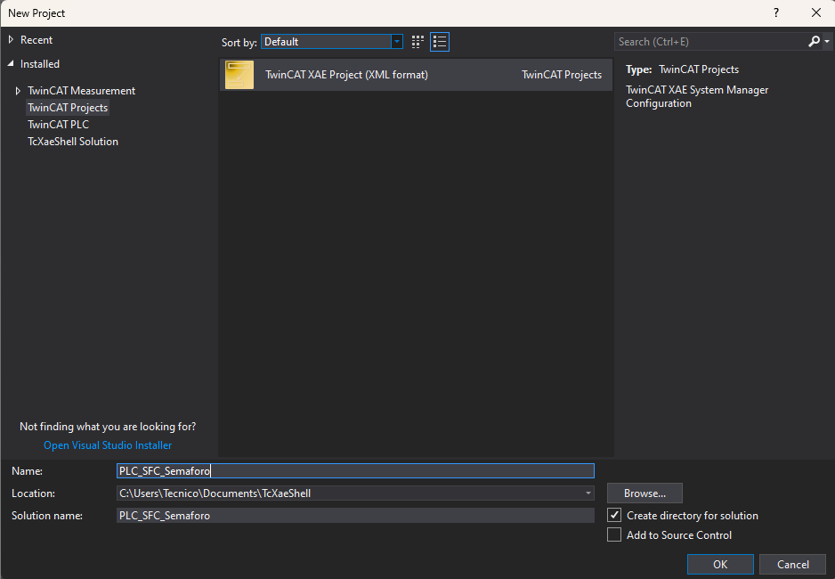
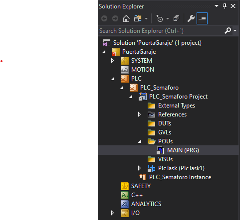
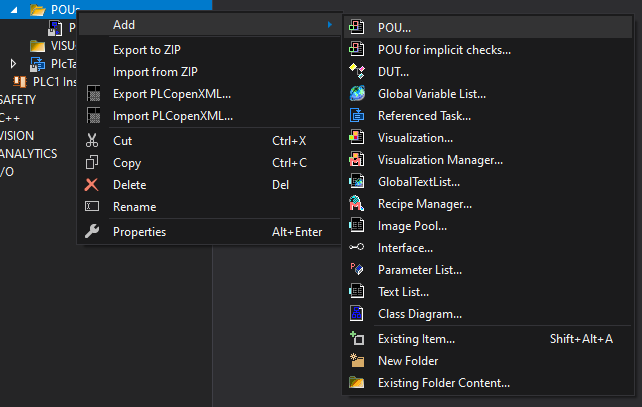
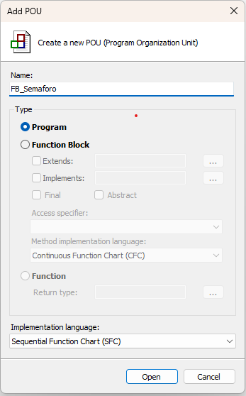
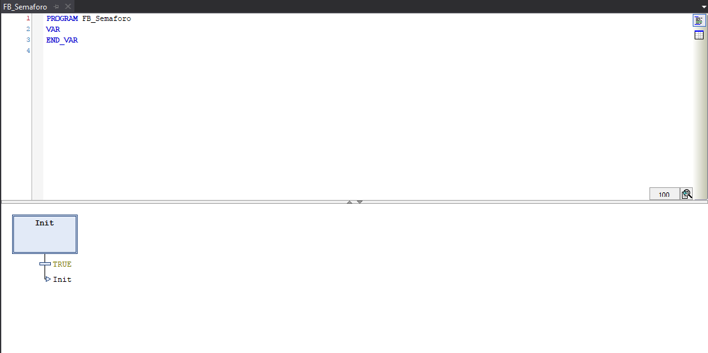
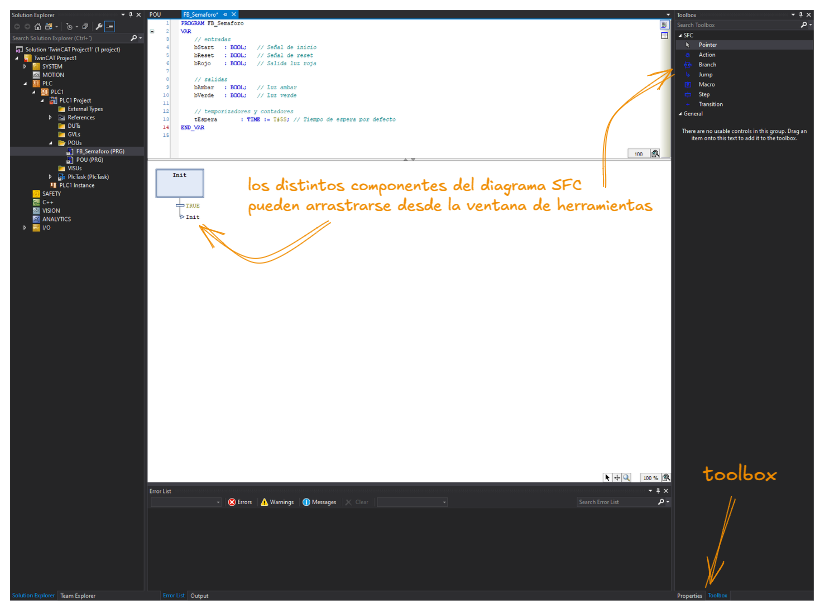
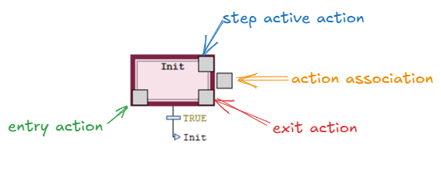

Creación de un proyecto TwinCAT 3 desde cero
Abrir TwinCAT XAE y crear un nuevo proyecto
- Abre TwinCAT XAE Shell (o Visual Studio).
- Ve a File → New → Project…
- En el buscador de plantillas escribe
TwinCATy selecciona TwinCAT XAE Project. - Asigna un nombre descriptivo al proyecto (p. ej.
PLC_SFC_Semaforo) y elige la carpeta de destino. - Haz clic en OK/Create.

Ventana de creación de un proyecto nuevoEstructura del proyecto
Tras crearlo, el Solution Explorer mostrará la siguiente estructura:
📁 Solución
└── 📁 TwinCAT Project
├── 📁 SYSTEM ← Configuración del sistema (tareas, tiempo real, rutas ADS) y licencias
├── 📁 MOTION ← Control de movimiento (vincularse con actuadores y accionadores)
├── 📁 PLC ← Proyectos PLC (aquí programamos)
├── 📁 SAFETY ← Módulos de seguridad
└── 📁 I/O ← Configuración de hardware y E/S
Añadir un proyecto PLC
- En el Solution Explorer, haz clic derecho sobre PLC → Add New Item…
- Selecciona la plantilla Standard PLC Project.
- Ponle un nombre (e.g.,
PLC_Semaforo) y haz clic en Add.
Se creará automáticamente la estructura del proyecto PLC:
📁 PLC_Semaforo
├── 📁 References ← Librerías referenciadas
├── 📁 DUTs ← Tipos de datos definidos por el usuario (Data Unit Types)
├── 📁 GVLs ← Listas de variables globales (Global Variable Lists)
├── 📁 POUs ← Unidades de programación (Program Organization Units)
│ └── MAIN (PRG) ← Programa principal (creado por defecto en ST)
├── 📁 VISUs ← Visualizaciones HMI
└── 📁 TASK CONFIGURATION ← Configuración de tareas

Declarar variables globales (GVL)
Las GVLs (Global Variable Lists) permiten declarar variables accesibles desde cualquier POU del proyecto. Para nuestro ejemplo de semáforo crearemos una GVL con las salidas:
- Clic derecho sobre GVLs → Add → Global Variable List…
- Nómbrala
GVL_IO. - Declara las variables:
VAR_GLOBAL
bRojo : BOOL; (* Luz roja del semáforo *)
bAmbar : BOOL; (* Luz ámbar del semáforo *)
bVerde : BOOL; (* Luz verde del semáforo *)
bReset : BOOL; (* Señal de reset del sistema *)
END_VAR
💡 El uso de variables globales no es imprescindible para la realización de las prácticas de la asignatura de Automatización Industrial. Ver uso de variables locales en Creación de un POU en SFC.
ℹ️ La principal diferencia entre las variables globales y locales radica en su alcance, duración y lugar de declaración, afectando a cómo los datos se comparten entre diferentes bloques de programa o POUs y tareas. Las variables globales definidas dentro de un GVL son visibles y accesibles desde cualquier parte del proyecto, mientras que las variables globales se declaran dentro de un bloque de código específico (POU) y únivamente son visibles y accesibles desde dentro de ese POU.
Creación de un POU en SFC
Añadir un nuevo POU con lenguaje SFC
- Clic derecho sobre la carpeta POUs → Add → POU…
- En el diálogo:
- Name:
MAIN - Type:
Program - Implementation language:
Sequential Function Chart (SFC) - Haz clic en Open.


TwinCAT creará el POU y abrirá el editor SFC mostrando una estructura inicial con:
- La etapa inicial Init (con doble borde).
- Una transición debajo de Init.
- Una etapa Step0 y otra transición Trans0.
Interfaz del editor SFC
El editor SFC en TwinCAT se divide en dos zonas:
- Zona superior (Declaration): declaración de variables locales del POU, igual que en cualquier otro lenguaje.
- Zona inferior (Implementation): el diagrama SFC propiamente dicho.
En la barra de menús aparece el menú contextual SFC con todas las operaciones de inserción y modificación de elementos.

Editor SFC en TwinCAT con las dos zonas principales (declaración de variables e implementación)Declarar variables locales del progama
En la zona de declaración del P_Semaforo, añade las variables que necesitarás:
PROGRAM MAIN
VAR
// entradas
bStart : BOOL; // Señal de inicio
bReset : BOOL; // Señal de reset
bRojo : BOOL; // Salida luz roja
// salidas
bAmbar : BOOL; // Luz ambar
bVerde : BOOL; // Luz verde
// temporizadores y contadores
tEspera : TIME := T#5S; // Tiempo de espera por defecto
END_VAR
Programación de pasos y transiciones
Insertar pasos y transiciones
Para añadir elementos al diagrama SFC, selecciona un elemento existente y usa el menú SFC de herramientas (Toolbox) situado en la ventana derecha o el menú contextual (clic derecho):
- Insert step-transition after: añade una etapa y una transición después del elemento seleccionado.
- Insert step-transition before: añade antes.
- También puedes arrastrar elementos desde el panel Toolbox.

Renombrar pasos y transiciones
Haz doble clic sobre el nombre de una etapa o transición para editarlo. Es importante usar nombres descriptivos:
| Nombre genérico | Nombre descriptivo sugerido |
|---|---|
| Step0 | Step_Rojo |
| Step1 | Step_Verde |
| Step2 | Step_Ambar |
| Trans0 | Trans_InicioRojo |
| Trans1 | Trans_RojoAVerde |
Programar una transición
Las transiciones contienen una condición booleana. Para editarla:
- Haz doble clic sobre la transición (en la línea horizontal que la representa).
- Se abre el editor de la condición (por defecto en ST).
- Escribe la expresión booleana. Ejemplos:
(* Transición que avanza al cabo de 5 segundos *)
tTemporizador.Q
(* Transición que avanza inmediatamente *)
TRUE
(* Transición que espera una señal de entrada *)
bStart
(* Transición compuesta *)
bStart AND NOT bReset
Crear un bucle de retorno (Jump)
Para que la secuencia se repita indefinidamente, necesitas un salto al final del diagrama que apunte de vuelta a la etapa inicial o al primer paso del ciclo.
- Selecciona la última transición del diagrama.
- En el menú SFC, selecciona Insert jump.
- Escribe el nombre de la etapa destino (p. ej.
Step_Rojo).
Programar temporizadores
Existen dos maneras de programar temporizadores en TwinCAT3
Opción A: implementación directa basada en variable interna de la etapa
En nuestro ejemplo del semáforo podremos usar la variable interna de tiempo de activación de la etapa t para mantener el semáforo en rojo durante 5 segundos definiendo en la transición inmediatamente posterior a Step_Rojo como:
Step_Rojo.t>=T#5s;
Opción B: utilizando bloques de funciones temporales predefinidos
Una manera un poco más elaborada pero que ofrece mayor versatilidad es mediante la definición de una funcion de bloques temporizadora. Para ello en la cabecera del POU MAIN declararemos una variable semaforoTimer de typo "TON" (timer On-Delay):
PROGRAM MAIN
VAR
semaforoTimer : TON;
END_VAR
Los temporizadores se programan con bloques de funciones ya existentes en TwinCAT:
- TON: Temporizador de retardo a la conexión; cuando la entrada
INes TRUE, espera el tiempo definido enPTantes de queQse vuelva TRUE. - TOF: Temporizador de retardo a la desconexión;
Qse mantiene en TRUE durante el tiempo PT después de que la entradaINpase a FALSE. - TP : Temporizador de pulso; pone
Qen TRUE durante una duración fijaPTdesde que la entradaINpasa a TRUE.
Estos bloques de funciones están comprendidos por una serie de campos que podemos modificar:
- **IN**: Condición de entrada que activa el temporizador (BOOL)
- **PT**: Tiempo preestablecido (e.g., T#5s) (TIME)
- **ET**: Tiempo transcurrido desde que se activó (TIME)
- **Q**: Salida que se pone en TRUE cuando ET>=PT (BOOL)
Además definiremos una acción de entrada a la etapa Step_Rojo donde se activa el temporizador:
semaforoTimer(IN := TRUE, PT := T#5s);
y una acción de entrada a la etapa Step_Ambar donde se resetea el temporizador:
semaforoTimer(IN := FALSE);
Y únicamente quedaría definir la condición de transición entre ambas etapas con:
semaforoTimer.Q
Acciones: tipos y calificadores
Una acción es el código que se ejecuta asociado a una etapa. Cada etapa puede tener múltiples acciones. En TwinCAT 3 existen tres tipos de acciones por momento de ejecución:
| Tipo | Descripción | Marcador visual |
|---|---|---|
| Entry action | Se ejecuta una sola vez al entrar en la etapa. | E en la esquina superior |
| Step action | Se ejecuta en cada ciclo mientras la etapa está activa. | Triángulo negro en la esquina |
| Exit action | Se ejecuta una sola vez justo antes de abandonar la etapa. | X en la esquina inferior |
Añadir una acción a una etapa
- Haz clic derecho sobre la etapa → Add action…
- Elige el tipo (Entry, Step o Exit).
- Ponle un nombre descriptivo (p. ej.
Step_Rojo_entry). - Selecciona el lenguaje de implementación (normalmente Structured Text).
- Escribe el código de la acción.
Ejemplo de Entry action para encender la luz roja y apagar las demás:
(* Step_Rojo_entry *)
bRojo := TRUE;
bAmbar := FALSE;
bVerde := FALSE;
(* Arrancar temporizador de 5 segundos *)
tTemporizador(IN := FALSE, PT := T#5S);
tTemporizador(IN := TRUE, PT := T#5S);
Calificadores de acción (Action Qualifiers)
Cuando una acción está definida en el bloque de acción de la etapa (en el recuadro lateral del diagrama), se puede asignar un calificador que controla su comportamiento. Los más usados son:
| Calificador | Significado |
|---|---|
N |
Non-stored: la variable es TRUE solo mientras la etapa esté activa. Se pone a FALSE automáticamente al salir. |
S |
Set: la variable se pone a TRUE al activarse la etapa y permanece TRUE aunque la etapa se desactive. |
R |
Reset: pone la variable a FALSE al desactivarese la etapa. |
P |
Pulse: ejecuta la acción durante un solo ciclo al activarse la etapa. |
L |
Limited: ejecuta la acción durante un tiempo máximo t. |
D |
Delayed: comienza a ejecutar la acción tras un retardo t. |

Ramificaciones: alternativas y paralelas
Ramificación alternativa (Alternative Branch)
Se usa cuando el flujo puede seguir uno de varios caminos posibles, dependiendo de qué condición se cumple primero. Solo se ejecuta una de las ramas.
- Se representa con una línea simple horizontal que separa los caminos.
- TwinCAT evalúa las transiciones de izquierda a derecha; la primera que sea
TRUEes la que se toma.
Para insertar una ramificación alternativa: 1. Selecciona la etapa antes de la bifurcación. 2. Menú SFC → Insert alternative branch.
┌──────┐
│ Step │
└──┬───┘
──────┼────── ← línea simple: ramificación alternativa
│ │
[cond A] [cond B]
│ │
┌──┴───┐ ┌───┴──┐
│Step A│ │Step B│
└──────┘ └──────┘
Ramificación paralela (Parallel Branch)
Se usa cuando múltiples secuencias deben ejecutarse simultáneamente. Todas las ramas se activan a la vez y el flujo solo continúa cuando todas han completado su última etapa activa.
- Se representa con una doble línea horizontal.
Para insertar una ramificación paralela: 1. Selecciona la etapa antes de la bifurcación. 2. Menú SFC → Insert parallel branch.
┌──────┐
│ Step │
└──┬───┘
════════════════ ← doble línea: ramificación paralela
│ │
┌──┴───┐ ┌───┴──┐
│Step A│ │Step B│ ← ambas ramas activas simultáneamente
└──────┘ └──────┘
════════════════ ← sincronización: se espera a que ambas terminen
│
[trans]
Variables de control del SFC (SFC Flags)
TwinCAT proporciona una serie de variables especiales que permiten controlar y monitorizar el comportamiento del diagrama SFC desde fuera o desde otras partes del programa. Para usarlas, deben declararse con el nombre exacto en la zona de declaración del POU.
| Variable | Tipo | Descripción |
|---|---|---|
SFCInit |
BOOL | Cuando es TRUE, reinicia el SFC a la etapa inicial (Init). El SFC no ejecuta código mientras permanezca a TRUE. |
SFCReset |
BOOL | Similar a SFCInit, pero además ejecuta las acciones de salida antes de reiniciar. |
SFCError |
BOOL | Se pone a TRUE cuando alguna etapa supera su tiempo máximo configurado (timeout). |
SFCErrorStep |
STRING | Nombre de la etapa que causó el timeout. |
SFCCurrentStep |
STRING | Nombre de la etapa actualmente activa (útil para diagnóstico). |
SFCTrans |
BOOL | Se pone a TRUE cuando se produce una transición. |
Ejemplo de uso de SFCInit para reset
(* En el programa MAIN, podemos reiniciar el semáforo así: *)
IF GVL_IO.bReset THEN
instSemaforo.SFCInit := TRUE;
ELSE
instSemaforo.SFCInit := FALSE;
END_IF